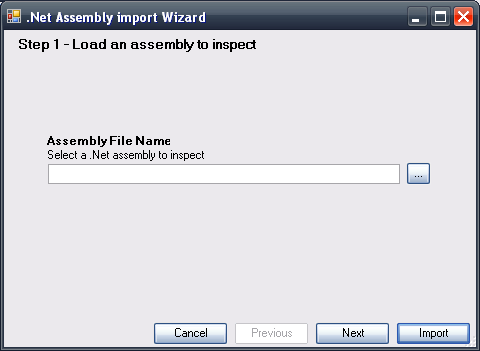
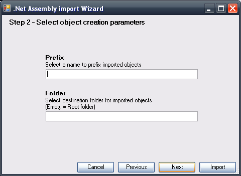
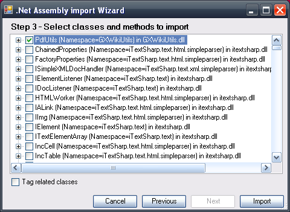

The .Net Assembly Import Wizard, located in Tools/Application Integration, allows us to create External Objects (EO) and the data types required to use them simply by selecting the relevant .Net assembly. Step 1:Enter the path into the assembly.  Step 2: If desired, indicate a prefix for the EOs and a folder where said objects will be stored in the KB.  Step 3:Given that the assembly can have more than one class, in the last step you must select those classes you wish to import.
An EO will be created for each selected class; its name will be formed by the prefix entered and the name of the class. For further information on External Objects of the Native Object type see: External Object: Native Object |
| Backlinks | |
| Category:External object | External Object: Native Object |